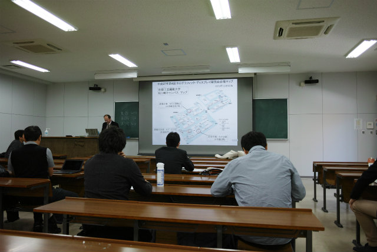
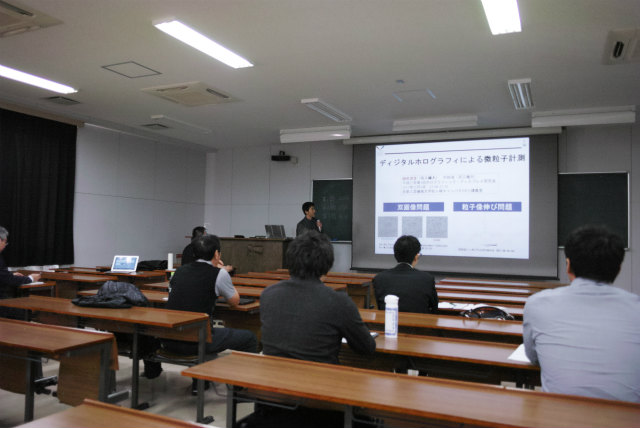
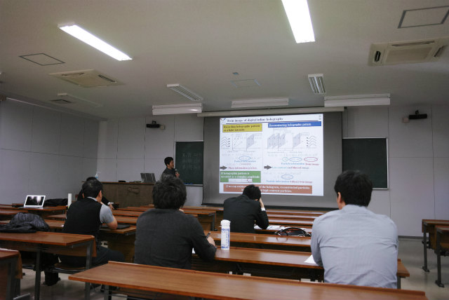
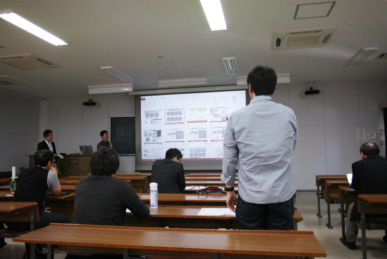
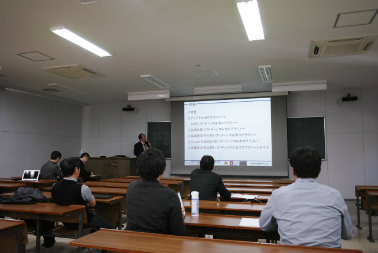
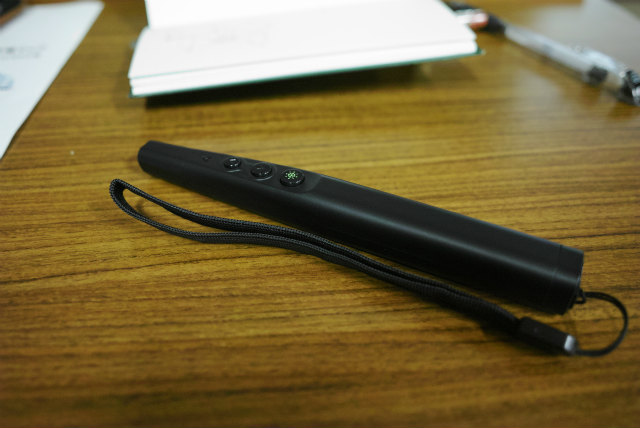

| ・ 第4回 ホログラフィック・ディスプレイ研究会 (H27.12.08) | |||
助教の人が「ディジタルホログラフィによる微粒子計測」という題目で，ホログラフィック・ディスプレイ研究会にて発表を行いました．札幌と高知の内容を合わせて紹介しました．10月にA井くんがポスター発表に行った日本光学会内の研究会で，日本光学会は計測研の新しい発表場所となりそうです．撮影はM1TNくんです．ホログラフィはやっぱり位相情報が大事ですね． |
|||
|

粟辻先生の開幕挨拶 |

助教の人 | ||
|

伸びと双画像問題へのアプローチ紹介 |

いい質問をたくさんいただいたので良かった 助教の人談 | ||
|

粟辻先生のご発表 |

ELA-G130（緑ダイオード＋2.4GHz）実戦投入 明るいし赤外線のような制約無し！ | ||